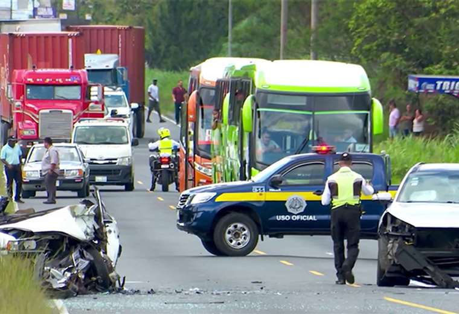

Fallecen 2 personas en un accidente de tráfico, 4 quedan gravemente heridos por colisión frontal
Según locales, los vehículos no tuvieron tiempo de respuesta entre ambos, ya que un conductor dobló en vía contraria no intencionadamente debido a que no era un lugareño. Nuevamente vemos otro caso relacionado a problemas de señalización en los que Costa Rica aguarda. Otras vidas inocentes han fallecido. Se critica al ministro de Obras Públicas y Transportes por su negligencia, por falta de señalización y borrado de las mismas en zonas sumamente transitadas.